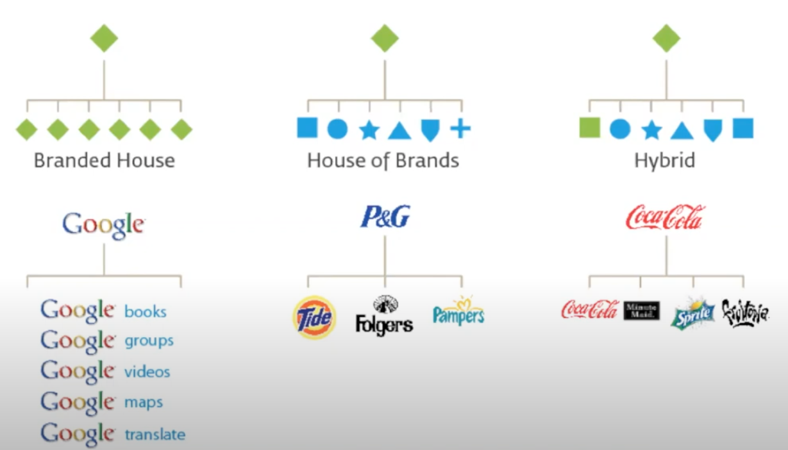
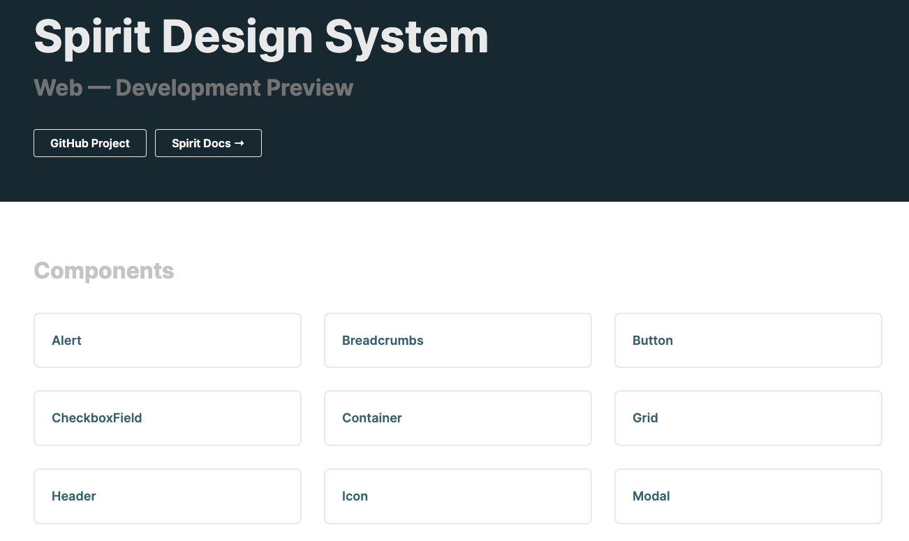

# Creating a Design System from Scratch: Tips and Tricks from a developer [Tomas Litera](https://literat.dev) <img src="static/lmc-logo.png" width="150" /> --- ## Context --- ### 🙋♂️ Something about me --- <ul> <Appear> <li>started with PHP with little bit of JavaScript</li> <li>worked with AWS and Serverless</li> <li>played with Node.js and React</li> <li>now working on a Design System</li> <li>=> Fullstack Pirate</li> </Appear> </ul> --- ### 👨👨👦👦 Something about team <img src="static/team.png" size="75%" /> - Michal Klimt as a product owner and UX/Design Manager - Tomas Litera, me, as a Design System Lead - Adam Kudrna as a UI Developer - Jan Kryšpín as a UI Developer - Tomáš Sychra as a Software Developer - Vojta Milerský as a UI Developer - Kateřina Dlouhá as a Jobs Design System Owner - Tomáš Janíček as a Software Developer --- ### 🛠️ Something about Techstack <img src="static/tech-stack.png" size="85%" /> - GitHub - Lerna + Nx => Monorepo - HTML - Sass - Javascript - Typescript - React - PHP - Symfony - Twig - Storybook - Supernova - Netlify - Vite --- ## What it is going to be about > Short story about what I have learned during a development of Design System --- <img src="static/youtube-danisko.png" size="85%" /> <Resource> <Link to="https://www.youtube.com/embed/PaSwiE5UQA4" /> </Resource> --- <img src="static/design-system-circels.svg" size="45%" /> --- ### 🎬 How it started <ul> <Appear> <li>demand for new product design</li> <li>demand for product redesigns</li> <li>demand for shareable components in design</li> </Appear> </ul> --- #### Portfolio of products <img src="static/products.png" size="85%" /> --- #### 🎨 Existing UI libraries --- ##### Jobs UI <img src="static/jobs-ui.png" size="85%" /> --- ##### Seduo UI <img src="static/seduo-ui.png" size="85%" /> --- ##### Teamio UI <img src="static/teamio-ui.png" size="85%" /> --- <CenterLayout> ### 🤹♂️ The Multibrand </CenterLayout> ---  --- <img src="static/volkswagen-group.png" size="75%" /> --- #### 🥇 Single brand **One product, one design, one technology** - Apple Human Interface Design - Google Material Design - Microsoft Fluent - Shopify Polaris - Ant Design - IBM Carbon - Adobe Spectrum - Attlasian Design System - Nucleus - Orbit <Resource> <Link to="https://designsystemsrepo.com/design-systems/" /> </Resource> --- #### 💅 Theming Multiple "themes" of one design <ul> <Appear> <li>light or dark mode</li> <li>switch to high contrast</li> <li>repaint the component</li> </Appear> </ul> --- #### 🏅 The real multi-brand Multiple products with multiple designs <img src="static/gel.png" size="65%" /> <Resource> <Link to="https://gel.westpacgroup.com.au/" /> </Resource> --- <CenterLayout> ### 💫 Tips and Tricks </CenterLayout> --- #### Product vs Project The design system must not be a project. **It MUST be a product.** > The key information is that for design system to work, it has to be product development and it has to be approached that way. > It's a long-term journey that doesn't end. --- #### 👩🎨 Design vs Development 👨💻 <ul> <Appear> <li>Design System vs UI library</li> <li>UX/Designer vs Developer</li> <li>Design => UI library</li> <li>Close cooperation of Designer and Developer</li> </Appear> </ul> --- 💬 > For the first time, there was a “holistic view” of the elements, of all their possible combinations, and it was “easy” for me and my colleagues to spot inconsistencies, detect side effects, and find duplications and common patterns. <Resource> <Link to="http://www.didoo.net/2018/02/from-zero-to-cosmos-part-1/" /> </Resource> --- 💬 > We were the ones telling designers that sometimes their designs were not consistent, or there were similar UI elements that could be reused instead of creating new ones, or that they were not taking into account some edge cases or problems with different languages. <Resource> <Link to="http://www.didoo.net/2018/02/from-zero-to-cosmos-part-2/" /> </Resource> --- 💬 > Everyone was starting to see visible, tangible improvements: modularisation of components, reusability of code & components, increased speed of development, and a better visual consistency & overall quality of the application. <Resource> <Link to="http://www.didoo.net/2018/02/from-zero-to-cosmos-part-3/" /> </Resource> --- <CenterLayout> ### 📚 Documentation </CenterLayout> --- #### 💥 Supernova **design-system-as-a-service platform** <ul> <Appear> <li>multibrand support</li> <li>integration with Figma</li> <li>documentation</li> <li>component health status page</li> <li>exporters</li> </Appear> </ul> <Resource> <Link to="http://supernova.io/" /> </Resource> --- <img src="static/supernova.png" size="65%" /> --- #### 🚑 Component Health Status <img src="static/health-status.png" size="65%" /> --- #### ❗ Great page but... <ul> <Appear> <li>manuall updates</li> <li>no automatization</li> <li>lack of rules or definitions (healthy vs unhealthy)</li> </Appear> </ul> --- #### 🛳 Exporters Figma => Supernova => GitHub repository => Package => App - design tokens - icons 👨🎨 => 👨💻 > Designers are responsible for release of design updates aka "release & publish" --- <img src="static/figma-release.png" size="75%" /> --- <CenterLayout> ### 🏗️ Architecture </CenterLayout> --- #### Common UI library <CenterLayout> Spirit Design System => Jobs Design System </CenterLayout> <CenterLayout> Common UI library => Product UI library </CenterLayout> <Resource> <Link to="https://github.com/lmc-eu/spirit-design-system" /> </Resource> --- #### Packages Monorepo <ul> <Appear> <li>design-tokens - <i>design variables</i></li> <li>icons - <i>svg assets and react icons</i></li> <li>web - <i>styles and JS functions</i></li> <li>web-react - <i>react components</i></li> <li>web-twig - <i>twig components</i></li> </Appear> </ul> --- #### 🛡️ Typescript **system in the system** defining stable component API using props and types <img src="static/tests.png" /> --- #### JSX in Twig templates <img src="static/twigx-syntax.png" size="80%" /> --- <img src="static/twigx-bundle.png" size="80%" /> --- #### 🚦 Style/System Props <img src="static/system-props.png" /> Be defensive but allow custom modifications - UNSAFE_className - UNSAFE_style <Resource> <Link to="https://react-spectrum.adobe.com/react-spectrum/styling.html" /> </Resource> --- #### 🚀 Zero to Hero configuration <img src="static/vite.jpg" /> ---  --- ### 🏎️ Back to the Future --- ### 🕵️♂️ Missing <ul> <Appear> <li>measurement</li> <li>adoption rate</li> <li>usage of components</li> <li>deprecation and health</li> <li>missing props and lack of features of the components</li> <li>candidates for a shared component and adoption to Spirit</li> </Appear> </ul> --- ### 🤺 Technological challenges <ul> <Appear> <li>CSS-in-JS</li> <li>React Native Apps</li> <li>Next.js Apps</li> <li>Styled components</li> <li>design tokens exported in JavaScript</li> </Appear> </ul> --- > Design System is a product that supports other Products and let them grow. --- # 👋 <Resource> <Link to="http://creating-a-design-system-from-scratch.netlify.app/" /> </Resource> --- <img src="static/spirit.png" size="80%" />